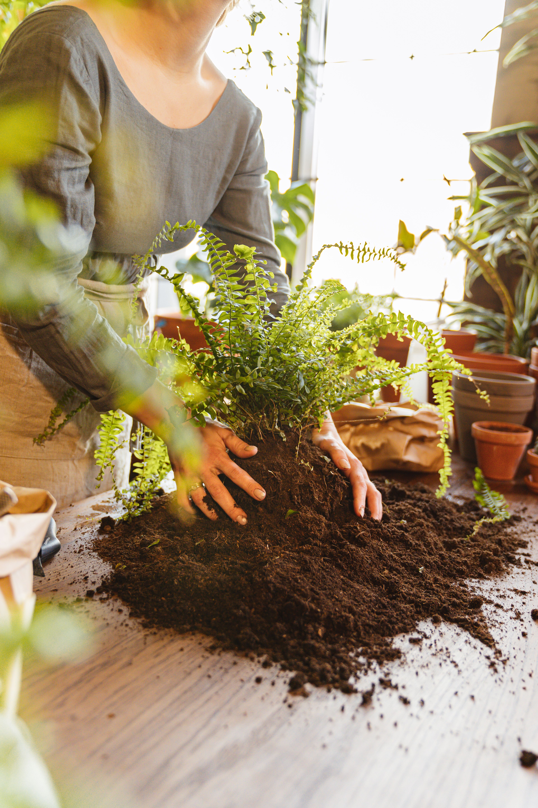
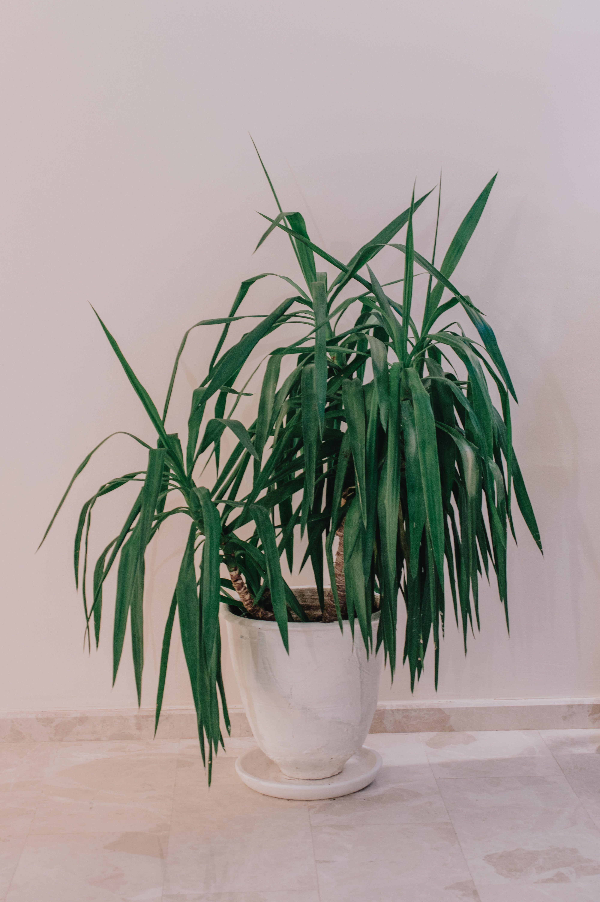

En este artículo
- Observa el espacio antes de diseñar
- Divide el jardín según sus usos
- Define una idea visual sencilla
- Selecciona plantas compatibles con el lugar
- Trabaja con alturas, volúmenes y puntos focales
- Elige caminos y materiales duraderos
- Diseña pensando en el mantenimiento futuro
- Preguntas frecuentes
- Conclusión
Observa el espacio antes de diseñar
Antes de dibujar caminos o comprar plantas, dedica tiempo a conocer el terreno. La cantidad de sol, el drenaje, el viento, las vistas y los recorridos habituales condicionan el diseño y permiten evitar decisiones costosas.
Una decisión práctica antes de continuar
Antes de pasar al siguiente punto, revisa lo que ya tienes y define qué problema quieres resolver. En cómo crear un jardín bonito desde cero, una decisión sencilla y bien justificada suele aportar más que añadir elementos sin una función clara.
Al abordar cómo crear un jardín bonito desde cero, conviene observar primero las condiciones reales del espacio y no decidir únicamente por una fotografía o una tendencia. Anota horas de sol y zonas de sombra. Esta revisión inicial ayuda a elegir soluciones proporcionadas, evita compras innecesarias y permite que cada cambio tenga una función concreta dentro del conjunto.
También es importante pensar en el uso cotidiano. Identifica accesos y recorridos que deben permanecer cómodos. Una solución puede resultar atractiva el primer día y, sin embargo, convertirse en una molestia si exige demasiado mantenimiento, ocupa una zona de paso o no responde a las necesidades de quienes utilizan el espacio. Por eso, comodidad, durabilidad y facilidad de cuidado deben valorarse junto con la estética.
La planificación por etapas suele dar mejores resultados que intentar resolverlo todo de una vez. Marca problemas de drenaje antes de plantar. Después de cada cambio, observa durante algunos días cómo funciona antes de añadir nuevos elementos. Esta pausa permite detectar excesos, corregir la distribución y mantener un presupuesto más controlado.
Otro criterio útil es buscar coherencia sin caer en la uniformidad. En cómo crear un jardín bonito desde cero, los materiales, colores, alturas y texturas pueden ser diferentes, pero deberían compartir alguna relación visual o funcional. Repetir ciertos tonos, mantener proporciones equilibradas y dejar zonas de descanso visual ayuda a que el resultado parezca intencional y no una suma de decisiones aisladas.
Por último, recuerda que no existe una única fórmula válida. Las condiciones de luz, clima, superficie disponible, presupuesto y tiempo de mantenimiento cambian de una vivienda a otra. Adaptar estas recomendaciones a tu situación concreta es más importante que copiar un ejemplo exactamente. El objetivo es conseguir un resultado que siga funcionando bien después de varias semanas y no solamente durante los primeros días.
Divide el jardín según sus usos
Un jardín funciona mejor cuando cada área tiene una finalidad: descanso, circulación, cultivo, juego o contemplación. No todas las viviendas necesitan las mismas zonas, así que el diseño debe responder a la vida cotidiana.
Una decisión práctica antes de continuar
Antes de pasar al siguiente punto, revisa lo que ya tienes y define qué problema quieres resolver. En cómo crear un jardín bonito desde cero, una decisión sencilla y bien justificada suele aportar más que añadir elementos sin una función clara.
Al abordar cómo crear un jardín bonito desde cero, conviene observar primero las condiciones reales del espacio y no decidir únicamente por una fotografía o una tendencia. Prioriza las funciones que realmente utilizarás. Esta revisión inicial ayuda a elegir soluciones proporcionadas, evita compras innecesarias y permite que cada cambio tenga una función concreta dentro del conjunto.
También es importante pensar en el uso cotidiano. Deja pasos suficientemente amplios y directos. Una solución puede resultar atractiva el primer día y, sin embargo, convertirse en una molestia si exige demasiado mantenimiento, ocupa una zona de paso o no responde a las necesidades de quienes utilizan el espacio. Por eso, comodidad, durabilidad y facilidad de cuidado deben valorarse junto con la estética.
La planificación por etapas suele dar mejores resultados que intentar resolverlo todo de una vez. Construye primero las zonas principales y añade detalles después. Después de cada cambio, observa durante algunos días cómo funciona antes de añadir nuevos elementos. Esta pausa permite detectar excesos, corregir la distribución y mantener un presupuesto más controlado.
Otro criterio útil es buscar coherencia sin caer en la uniformidad. En cómo crear un jardín bonito desde cero, los materiales, colores, alturas y texturas pueden ser diferentes, pero deberían compartir alguna relación visual o funcional. Repetir ciertos tonos, mantener proporciones equilibradas y dejar zonas de descanso visual ayuda a que el resultado parezca intencional y no una suma de decisiones aisladas.

Por último, recuerda que no existe una única fórmula válida. Las condiciones de luz, clima, superficie disponible, presupuesto y tiempo de mantenimiento cambian de una vivienda a otra. Adaptar estas recomendaciones a tu situación concreta es más importante que copiar un ejemplo exactamente. El objetivo es conseguir un resultado que siga funcionando bien después de varias semanas y no solamente durante los primeros días.
Define una idea visual sencilla
Elegir una línea general ayuda a que plantas y materiales diferentes parezcan parte del mismo conjunto. Puede ser natural, mediterránea, contemporánea o simplemente una combinación personal basada en pocos materiales y colores.
Una decisión práctica antes de continuar
Antes de pasar al siguiente punto, revisa lo que ya tienes y define qué problema quieres resolver. En cómo crear un jardín bonito desde cero, una decisión sencilla y bien justificada suele aportar más que añadir elementos sin una función clara.
Al abordar cómo crear un jardín bonito desde cero, conviene observar primero las condiciones reales del espacio y no decidir únicamente por una fotografía o una tendencia. Utiliza referencias como inspiración, no como planos rígidos. Esta revisión inicial ayuda a elegir soluciones proporcionadas, evita compras innecesarias y permite que cada cambio tenga una función concreta dentro del conjunto.
También es importante pensar en el uso cotidiano. Repite algunos materiales o formas para crear continuidad. Una solución puede resultar atractiva el primer día y, sin embargo, convertirse en una molestia si exige demasiado mantenimiento, ocupa una zona de paso o no responde a las necesidades de quienes utilizan el espacio. Por eso, comodidad, durabilidad y facilidad de cuidado deben valorarse junto con la estética.
La planificación por etapas suele dar mejores resultados que intentar resolverlo todo de una vez. Evita introducir demasiadas ideas en un espacio pequeño. Después de cada cambio, observa durante algunos días cómo funciona antes de añadir nuevos elementos. Esta pausa permite detectar excesos, corregir la distribución y mantener un presupuesto más controlado.
Otro criterio útil es buscar coherencia sin caer en la uniformidad. En cómo crear un jardín bonito desde cero, los materiales, colores, alturas y texturas pueden ser diferentes, pero deberían compartir alguna relación visual o funcional. Repetir ciertos tonos, mantener proporciones equilibradas y dejar zonas de descanso visual ayuda a que el resultado parezca intencional y no una suma de decisiones aisladas.
Por último, recuerda que no existe una única fórmula válida. Las condiciones de luz, clima, superficie disponible, presupuesto y tiempo de mantenimiento cambian de una vivienda a otra. Adaptar estas recomendaciones a tu situación concreta es más importante que copiar un ejemplo exactamente. El objetivo es conseguir un resultado que siga funcionando bien después de varias semanas y no solamente durante los primeros días.
Selecciona plantas compatibles con el lugar
Las plantas deben elegirse por sus necesidades reales y por el tamaño que alcanzarán, no solamente por su aspecto en el vivero. Una especie bien adaptada suele necesitar menos correcciones y conserva mejor su apariencia.
Una decisión práctica antes de continuar
Antes de pasar al siguiente punto, revisa lo que ya tienes y define qué problema quieres resolver. En cómo crear un jardín bonito desde cero, una decisión sencilla y bien justificada suele aportar más que añadir elementos sin una función clara.
Al abordar cómo crear un jardín bonito desde cero, conviene observar primero las condiciones reales del espacio y no decidir únicamente por una fotografía o una tendencia. Comprueba luz, agua, clima y tamaño adulto. Esta revisión inicial ayuda a elegir soluciones proporcionadas, evita compras innecesarias y permite que cada cambio tenga una función concreta dentro del conjunto.
También es importante pensar en el uso cotidiano. Combina estructuras permanentes con floraciones estacionales. Una solución puede resultar atractiva el primer día y, sin embargo, convertirse en una molestia si exige demasiado mantenimiento, ocupa una zona de paso o no responde a las necesidades de quienes utilizan el espacio. Por eso, comodidad, durabilidad y facilidad de cuidado deben valorarse junto con la estética.

La planificación por etapas suele dar mejores resultados que intentar resolverlo todo de una vez. Deja distancia suficiente entre ejemplares jóvenes. Después de cada cambio, observa durante algunos días cómo funciona antes de añadir nuevos elementos. Esta pausa permite detectar excesos, corregir la distribución y mantener un presupuesto más controlado.
Otro criterio útil es buscar coherencia sin caer en la uniformidad. En cómo crear un jardín bonito desde cero, los materiales, colores, alturas y texturas pueden ser diferentes, pero deberían compartir alguna relación visual o funcional. Repetir ciertos tonos, mantener proporciones equilibradas y dejar zonas de descanso visual ayuda a que el resultado parezca intencional y no una suma de decisiones aisladas.
Por último, recuerda que no existe una única fórmula válida. Las condiciones de luz, clima, superficie disponible, presupuesto y tiempo de mantenimiento cambian de una vivienda a otra. Adaptar estas recomendaciones a tu situación concreta es más importante que copiar un ejemplo exactamente. El objetivo es conseguir un resultado que siga funcionando bien después de varias semanas y no solamente durante los primeros días.
Trabaja con alturas, volúmenes y puntos focales
Combinar árboles pequeños, arbustos, herbáceas y cubresuelos puede aportar profundidad. Los puntos focales ayudan a dirigir la mirada, pero deben utilizarse con moderación para no competir entre sí.
Una decisión práctica antes de continuar
Antes de pasar al siguiente punto, revisa lo que ya tienes y define qué problema quieres resolver. En cómo crear un jardín bonito desde cero, una decisión sencilla y bien justificada suele aportar más que añadir elementos sin una función clara.
Al abordar cómo crear un jardín bonito desde cero, conviene observar primero las condiciones reales del espacio y no decidir únicamente por una fotografía o una tendencia. Coloca los elementos altos donde no bloqueen vistas importantes. Esta revisión inicial ayuda a elegir soluciones proporcionadas, evita compras innecesarias y permite que cada cambio tenga una función concreta dentro del conjunto.
También es importante pensar en el uso cotidiano. Repite grupos de plantas para evitar un aspecto fragmentado. Una solución puede resultar atractiva el primer día y, sin embargo, convertirse en una molestia si exige demasiado mantenimiento, ocupa una zona de paso o no responde a las necesidades de quienes utilizan el espacio. Por eso, comodidad, durabilidad y facilidad de cuidado deben valorarse junto con la estética.
La planificación por etapas suele dar mejores resultados que intentar resolverlo todo de una vez. Evalúa el jardín desde ventanas y zonas de descanso. Después de cada cambio, observa durante algunos días cómo funciona antes de añadir nuevos elementos. Esta pausa permite detectar excesos, corregir la distribución y mantener un presupuesto más controlado.
Otro criterio útil es buscar coherencia sin caer en la uniformidad. En cómo crear un jardín bonito desde cero, los materiales, colores, alturas y texturas pueden ser diferentes, pero deberían compartir alguna relación visual o funcional. Repetir ciertos tonos, mantener proporciones equilibradas y dejar zonas de descanso visual ayuda a que el resultado parezca intencional y no una suma de decisiones aisladas.
Por último, recuerda que no existe una única fórmula válida. Las condiciones de luz, clima, superficie disponible, presupuesto y tiempo de mantenimiento cambian de una vivienda a otra. Adaptar estas recomendaciones a tu situación concreta es más importante que copiar un ejemplo exactamente. El objetivo es conseguir un resultado que siga funcionando bien después de varias semanas y no solamente durante los primeros días.
Elige caminos y materiales duraderos
Los caminos conectan las zonas y también forman parte de la composición. Piedra, grava, madera u otros materiales deben elegirse considerando drenaje, seguridad, mantenimiento y relación con la vivienda.
Una decisión práctica antes de continuar
Antes de pasar al siguiente punto, revisa lo que ya tienes y define qué problema quieres resolver. En cómo crear un jardín bonito desde cero, una decisión sencilla y bien justificada suele aportar más que añadir elementos sin una función clara.

Al abordar cómo crear un jardín bonito desde cero, conviene observar primero las condiciones reales del espacio y no decidir únicamente por una fotografía o una tendencia. Evita superficies resbaladizas en zonas húmedas. Esta revisión inicial ayuda a elegir soluciones proporcionadas, evita compras innecesarias y permite que cada cambio tenga una función concreta dentro del conjunto.
También es importante pensar en el uso cotidiano. Prepara correctamente la base antes de instalar materiales. Una solución puede resultar atractiva el primer día y, sin embargo, convertirse en una molestia si exige demasiado mantenimiento, ocupa una zona de paso o no responde a las necesidades de quienes utilizan el espacio. Por eso, comodidad, durabilidad y facilidad de cuidado deben valorarse junto con la estética.
La planificación por etapas suele dar mejores resultados que intentar resolverlo todo de una vez. Usa pocos materiales principales para mantener coherencia. Después de cada cambio, observa durante algunos días cómo funciona antes de añadir nuevos elementos. Esta pausa permite detectar excesos, corregir la distribución y mantener un presupuesto más controlado.
Otro criterio útil es buscar coherencia sin caer en la uniformidad. En cómo crear un jardín bonito desde cero, los materiales, colores, alturas y texturas pueden ser diferentes, pero deberían compartir alguna relación visual o funcional. Repetir ciertos tonos, mantener proporciones equilibradas y dejar zonas de descanso visual ayuda a que el resultado parezca intencional y no una suma de decisiones aisladas.
Por último, recuerda que no existe una única fórmula válida. Las condiciones de luz, clima, superficie disponible, presupuesto y tiempo de mantenimiento cambian de una vivienda a otra. Adaptar estas recomendaciones a tu situación concreta es más importante que copiar un ejemplo exactamente. El objetivo es conseguir un resultado que siga funcionando bien después de varias semanas y no solamente durante los primeros días.
Diseña pensando en el mantenimiento futuro
Un jardín bonito debe poder mantenerse con el tiempo disponible. Sistemas de riego adecuados, bordes claros y plantas compatibles reducen tareas repetitivas y ayudan a conservar el diseño.
Una decisión práctica antes de continuar
Antes de pasar al siguiente punto, revisa lo que ya tienes y define qué problema quieres resolver. En cómo crear un jardín bonito desde cero, una decisión sencilla y bien justificada suele aportar más que añadir elementos sin una función clara.
Al abordar cómo crear un jardín bonito desde cero, conviene observar primero las condiciones reales del espacio y no decidir únicamente por una fotografía o una tendencia. Agrupa plantas con necesidades similares. Esta revisión inicial ayuda a elegir soluciones proporcionadas, evita compras innecesarias y permite que cada cambio tenga una función concreta dentro del conjunto.
También es importante pensar en el uso cotidiano. Instala soluciones de riego donde realmente aporten eficiencia. Una solución puede resultar atractiva el primer día y, sin embargo, convertirse en una molestia si exige demasiado mantenimiento, ocupa una zona de paso o no responde a las necesidades de quienes utilizan el espacio. Por eso, comodidad, durabilidad y facilidad de cuidado deben valorarse junto con la estética.
La planificación por etapas suele dar mejores resultados que intentar resolverlo todo de una vez. Revisa el jardín por temporadas y corrige problemas pequeños pronto. Después de cada cambio, observa durante algunos días cómo funciona antes de añadir nuevos elementos. Esta pausa permite detectar excesos, corregir la distribución y mantener un presupuesto más controlado.
Otro criterio útil es buscar coherencia sin caer en la uniformidad. En cómo crear un jardín bonito desde cero, los materiales, colores, alturas y texturas pueden ser diferentes, pero deberían compartir alguna relación visual o funcional. Repetir ciertos tonos, mantener proporciones equilibradas y dejar zonas de descanso visual ayuda a que el resultado parezca intencional y no una suma de decisiones aisladas.
Por último, recuerda que no existe una única fórmula válida. Las condiciones de luz, clima, superficie disponible, presupuesto y tiempo de mantenimiento cambian de una vivienda a otra. Adaptar estas recomendaciones a tu situación concreta es más importante que copiar un ejemplo exactamente. El objetivo es conseguir un resultado que siga funcionando bien después de varias semanas y no solamente durante los primeros días.
Preguntas frecuentes
¿Cuánto cuesta crear un jardín desde cero?
Depende del tamaño, materiales, plantas y trabajos necesarios. Planificar por etapas permite controlar mejor el presupuesto.
¿Qué debería hacer primero?
Empieza por observar el terreno, definir usos y resolver drenaje o infraestructura antes de comprar plantas decorativas.
¿Cómo evitar que el jardín se vea desordenado?
Limita materiales, repite grupos de plantas, deja zonas de descanso visual y considera el tamaño adulto de cada especie.
Conclusión
Crear un jardín bonito desde cero requiere más planificación que compras. Conocer el terreno, definir funciones, elegir plantas compatibles y limitar los materiales permite construir una base coherente. Trabaja por etapas y piensa desde el principio en el mantenimiento: un jardín que puede cuidarse con constancia conservará su belleza durante mucho más tiempo.